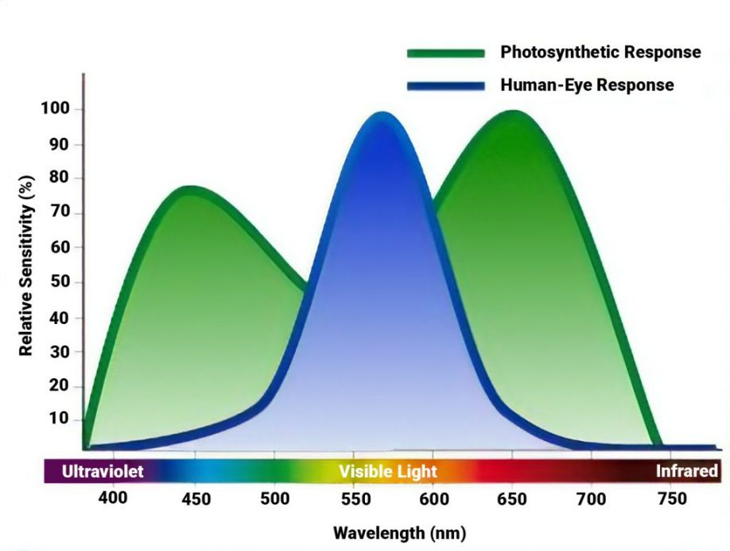

1.光的測量單位
人類和植物對光的感知是不同的，
我們人眼對綠光的敏感度遠高於可見光譜末端的光(紅色和藍色)，
植物反而是對藍色和紅色較為敏感，如下圖

因此，我們分別對人眼看到的亮度以及對植物光合作用有用的亮度分別訂了量測單位
人類肉眼:
1.光通量以流明(lm)為單位，是人類感知到的光源發出的可見光總量
2.勒克斯(lex)是每平方米表面積的流明數(也就是對人類來說所謂的亮度)
植物:
1.光通量以光合光子通量(PPF)為單位，是對植物光合作用有效的光總量(也就是植物燈發出的光總量)
2.光合光子通量密度(PPFD)是每平方米每秒的微摩爾數(μmol/s.m²)，(也就是對植物來說所謂的亮度)
2.植物對光照的需求
如果想知道植物每日需要多少光照，我們可以使用每日光積分(DLI)作為測量單位
每日光積分(DLI)的概念就是"亮度 × 時間"，計算公式如下:
DLI = PPFD × 每日光照秒數 ÷ 1000000
陽光與植物燈的亮度越高，每日所需的光照時間也越少。
不過由於葉片能承受的PPFD是有上限的，所以需要在PPFD與每日光照時間找出平衡。
此外，也有研究指出，在相同DLI下，「低PPFD長時間光照」的效果比「高PPFD短時間光照」的效果來的好。
總和上述，植物燈應盡量以低PPFD長時間光照為標準做設定。